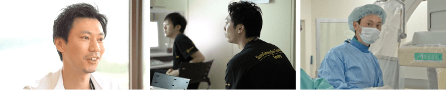
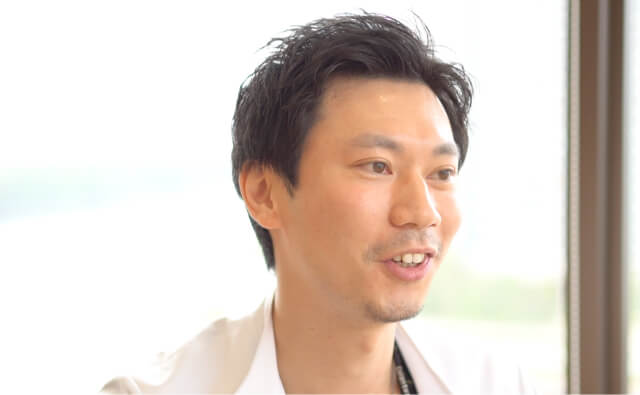

- Q1 入局してからこれまでのキャリア
- 現在医師9年目になります。2012年に旗の台の昭和大学本院の神経内科に入局し、神経内科一般の診療に携わりながら、今の上司である神谷先生の元で週1回カテーテルの検査、治療を学んでおりました。2015年4月に昭和大学江東豊洲病院脳神経内科に入りまして、そこから血管内治療を中心とした脳卒中診療に加えて神経救急の診療に携わっております。
- Q2 医局内での役割
- カテーテル検査、治療を専門医の2人と一緒に行い、脳血管内治療の経験を積む一方で、チームリーダーとして学生も含め若手の教育も積極的に行い、上と下との架け橋のような役割を担っております。
- Q3 業務を行っていく上で感じた喜びややりがい
- 脳卒中診療のなかで、カテーテル治療を含めた再開通治療で患者さんの症状が劇的に良くなっていくのをみられるのは、やりがいがあります。また、当院では急性期から積極的にリハビリを行っております。リハビリをしてご家族の元に帰る、ご家族と一緒に生活をしていくところをみられることにもやりがいを感じています。
- Q4 プライベートの過ごし方
- 脳神経内科の特色の１つでもありますが、働くときは働いて、休むときは休むという、メリハリを付けた診療を行っております。ですので、休みをしっかりとることができています。休みの日は、子供と遊びに行ったり、病院のスタッフとみんなでフットサルやテニスなどスポーツをして楽しんでいます。
- Q5 今後の目標
- まずは来年、脳神経血管内治療学会の専門医受験があるので、確実に合格したいです。引き続き神経救急の診療にあたりながら、それと同時に患者さんの生活期にも重点を置いた診療も行ってみたいと思っています。そのためには、リハビリテーションの勉強をして、脳卒中を急性期からリハビリまで包括的に診療できるようになりたいと考えています。
- Q6 就活中の研修医へのメッセージ
- 当センターは若手が多いので、みなさんにとっても非常に働きやすい環境だと思います。救急疾患が多くて大変なところもありますが、お互い助け合っていこうという雰囲気が強いので、みんなで一緒に成長できるところです。ぜひ一緒に働けたらと思います。

